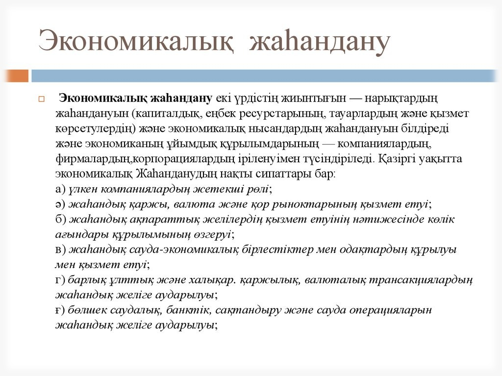
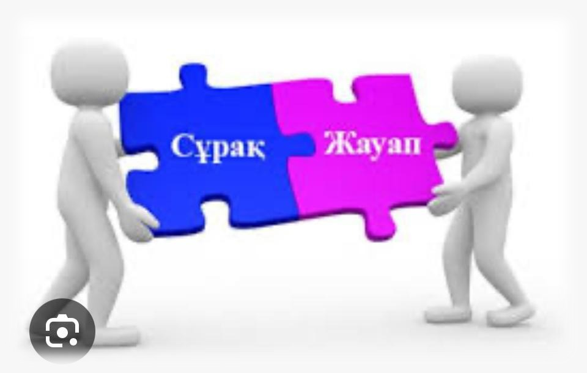
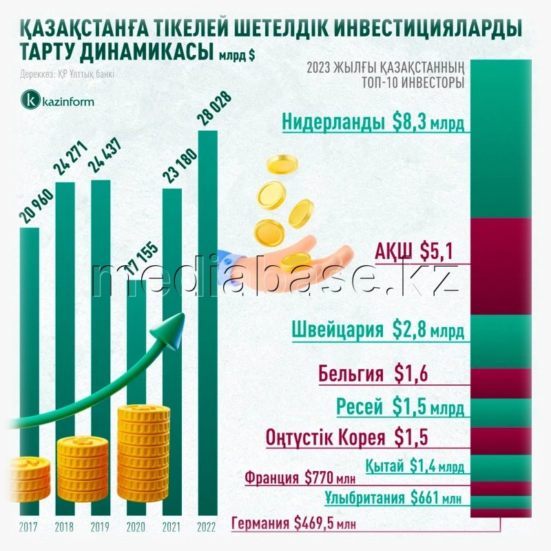

13-ТАПСЫРМА (СӨЖ № 13.1)
Экономикалық жаһандану
I. Теория
Мақсаты: Әлем елдерінің экономикасын өзара байланыстырып, сауда, инвестиция, технология және еңбек күшінің еркін қозғалысын қамтамасыз ету арқылы жаһандық экономикалық даму мен ынтымақтастықты арттыру.
Міндеттері: Экономикалық жаһандану ұғымын дұрыс түсіну және анықтама бере білу. Жаһанданудың негізгі себептері мен қозғаушы күштерін атау. Халықаралық сауда, инвестициялар, технология алмасу және еңбек көші-қонының жаһандану үдерісіндегі орнын түсіну. Экономикалық жаһанданудың оң және теріс әсерлерін ажырата білу. Жаһанданудың Қазақстан экономикасына ықпалын бағалау және нақты мысалдар келтіру. Әлем елдері арасындағы экономикалық өзара байланыстарды талдай білу.
Бағалау критерийлері: Экономикалық жаһандану ұғымын дұрыс түсіндіре алады. Негізгі себептері мен салдарын нақты атайды. Оң және теріс әсерлерін ажырата біледі. Қазақстанға әсерін талдай алады. Теорияны нақты мысалдармен байланыстырады. Өз ойын логикалық, дәлелді түрде жеткізеді.
Дәрістің қысқаша тезистері
Экономикалық жаһандану – бұл әлем елдерінің экономикасының тығыз байланысып, шекаралар арқылы тауарлар, қызметтер, капитал және еңбек күшінің еркін қозғалуын қамтамасыз ететін үдеріс. Бұл процесс технологияның дамуы, ақпарат құралдарының жетілуі және халықаралық сауданың өсуі арқылы жүзеге асады.

1-сурет: Экономикалық жаһандану және жаһандық нарық
Жаһандану елдерге жаңа нарықтарға шығуға, инвестициялар тартуға, технология мен білімді алмасуға мүмкіндік береді. Қазақстан да бұл үрдіске белсенді қатысып, шетелдік инвестициялар тартып, халықаралық ұйымдарға мүше болуда.
Алайда, экономикалық жаһанданудың теріс жақтары да бар: кейбір елдердің ұлттық өндірісі төмендеп, әлеуметтік теңсіздік артуы мүмкін. Сондықтан бұл үдерісті тиімді басқару маңызды. Қорыта айтқанда, экономикалық жаһандану – бұл әлемдік экономикадағы даму мен интеграцияның басты факторы.

2-сурет: Халықаралық сауда мен инвестициялар ағыны
Бақылау сұрақтары:
- Экономикалық жаһандану дегеніміз не?
- Жаһандану қандай негізгі факторлармен іске асады?
- Экономикалық жаһанданудың басты белгілерін атаңыз.
- Жаһанданудың ұлттық экономикаға қандай оң әсерлері бар?
- Жаһанданудың теріс жақтарына қандай мысалдар келтіре аласыз?
- Қазақстан жаһандану үдерісіне қалай қатысуда?
- Трансұлттық корпорациялар жаһандану барысында қандай рөл атқарады?
- Экономикалық жаһанданудың болашағы туралы өз ойыңызды білдіріңіз.
- Халықаралық сауданың жаһандану үдерісіндегі маңызын түсіндіріңіз.
- Экономикалық жаһандану мен ұлттық қауіпсіздік арасында қандай байланыс бар?
Тапсырманы орындау бойынша нұсқаулық (орындау тәртібі):
- Тапсырма мәтінін мұқият оқыңыз.
- Негізгі ұғымдар мен түсініктерді анықтаңыз.
- Дәрісте қаралған материалдарға сілтеме жасап, жауаптарыңызды дәлелдеңіз.
- Мысалдар келтіріп, ойыңызды нақты әрі қысқа түрде жазыңыз.
- Жұмысыңызды тексеріп, грамматикалық және логикалық қателерді түзетіңіз.
Тапсырмадан күтілетін нәтиже: Студенттер экономикалық жаһандану ұғымын түсініп, оның себептері мен салдарын талдай алады; Қазақстанның жаһандану процесіндегі рөлін анықтап, негізгі тұжырымдар мен нақты мысалдар келтіре алады.
Модуль / пән бойынша ұсынылатын әдебиеттер тізіміне сілтемелер: Okulyk.kz - Экономикалық жаһандану
II. Практикалық кешен (СӨЖ № 13.2)
1-тапсырма. Диаграмма жасау
Тапсырма: Халықаралық сауда мен инвестициялардың өсу динамикасын көрсететін график немесе диаграмма құрыңыз және оның мағынасын түсіндіріңіз.
1-сурет: Халықаралық сауда мен инвестициялардың өсу динамикасы
2-тапсырма. Кейстік зерттеу
Тапсырма: Берілген сурет бойынша Қазақстанның шетелдік инвестицияларды тарту тәжірибесін зерттеп, оның экономикалық дамуға әсер еткенін талдаңыз.
3-тапсырма. Мақала талдау
Тапсырма: Қазіргі экономикалық жаһандану туралы мақаланың негізгі идеяларын жазбаша түрде қысқаша қорытындылаңдар.
Талдауға арналған үзінді: «Экономикалық жаһандану – бұл әлем елдерінің экономикасының тығыз байланысып, шекаралар арқылы тауарлар, қызметтер, капитал және еңбек күшінің еркін қозғалуын қамтамасыз ететін үдеріс...»
4-тапсырма. Салыстыру кестесі
Тапсырма: Екі елдің (мысалы, Қазақстан мен Қытайдың) жаһандануға қатысу деңгейін салыстырып, айырмашылықтары мен ұқсастықтарын анықтаңыз.

2-сурет: Қазақстан мен Қытайдың экономикалық модельдері
| Салыстыру критерийлері | Қазақстан | Қытай | Айырмашылықтар мен ұқсастығы |
|---|---|---|---|
| Жаһандануға қатысу бастамасы | |||
| Шетелдік инвестициялар | |||
| Халықаралық сауда көлемі | |||
| Технологияны қабылдау | |||
| Трансұлттық корпорациялар | |||
| Жұмыс күші және көші-қоны | |||
| Экономикалық даму деңгейі |
Модуль / пән бойынша ұсынылатын әдебиеттер тізіміне сілтемелер: Okulyk.kz - Экономикалық жаһандану
III. Бағалау парағы
| № | Тапсырма | Дескрипторлар | Ұпай саны | Студенттің ұпай саны |
|---|---|---|---|---|
| 1 | Бақылау сұрақтары |
• Мәтінді түсініп оқиды, түсінгенін айтады; • Сұрақтарға жауап береді |
5 балл 10 балл |
|
| 2 | Мақала талдау |
• Мәтінді оқиды; • Негізгі идеяларын жазбаша түрде қысқаша қорытындылайды |
5 балл 5 балл |
|
| 3 | Диаграмма жасау |
• Диаграмма құрады; • Мағынасын түсіндіреді |
10 балл 5 балл |
|
| 4 | Салыстыру (Қазақстан және Қытай) |
• Екі елдің жаһандануға қатысу деңгейін салыстырады; • Айырмашылықтары мен ұқсастықтарын анықтайды |
20 балл 20 балл |
|
| 5 | Кейстік зерттеу |
• Қазақстанның шетелдік инвестицияларды тарту тәжірибесін зерттейді; • Оның экономикалық дамуға қалай әсер еткеніне талдау жасайды |
20 балл | |
| Барлығы: | 100 балл | / 100 | ||